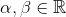
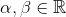
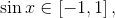
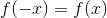
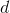
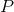

Funcții mărginite. Funcții pare. Funcții impare
Funcții mărginite
Definiția FE4: Funcție mărginită
Funcția  se numește mărginită, dacă există , astfel încât
se numește mărginită, dacă există , astfel încât
Cu alte cuvinte, mulțimea valorilor funcției  este mărginită.
este mărginită.
Observație:
Funcția este mărginită dacă și numai dacă există astfel încât oricare ar fi  , ceea ce este echivalent cu a spune că funcția este mărginită dacă și numai dacă există , astfel încât
, ceea ce este echivalent cu a spune că funcția este mărginită dacă și numai dacă există , astfel încât
Exemple:
- Funcția este mărginită, deoarece  oricare ar fi

- Funcția este mărginită, deoarece oricare ar fi
Funcții pare și funcții impare
Definiția FE5: Mulțime simetrică
O mulțime se numește mulțime simetrică dacă, luând un element , atunci și
Exemple:
- mulțimea este o mulțime simetrică.
- mulțimea nu este o mulțime simetrică, deoarece dar
Definiția FE6: Funcția pară
Fie  o mulțime nevidă și funcția .
o mulțime nevidă și funcția .
Spunem că este o funcție pară, dacă oricare ar fi
Exemple:
- Funcția este o funcție pară, deoarece:
ceea ce e echivalent cu , oricare ar fi
- Funcția
 nu este o funcție pară, deoarece, avem că:
nu este o funcție pară, deoarece, avem că:
adică , oricare ar fi
Definiția FE7: Funcția impară
Funcția , cu mulțime simetrică, se numește impară, dacă oricare ar fi
Exemplu:
Funcția este o funcție impară, deoarece avem că:
ceea ce e echivalent cu , oricare ar fi
În cele ce urmează ți se va prezenta interpretarea geometrică a parității și a imparității, iar în pagina următoare acesteia, vei afla care este simetria graficului față de o dreaptă, respectiv de un punct.
Interpretarea geometrică a parității și a imparității
Înainte de a interpreta geometric funcția pară și funcția impară, reamintim ce este o axă de simetrie și ce este un punct de simetrie:
O dreaptă  este axă de simetrie pentru o figură geometrică  , dacă simetricul oricărui punct al figurii față de dreapta aparține figurii , iar un punct de simetrie este acel punct, care se află în mijlocul unui segment.
, dacă simetricul oricărui punct al figurii față de dreapta aparține figurii , iar un punct de simetrie este acel punct, care se află în mijlocul unui segment.
Propoziția FE8: Interpretarea geometrică a parității și a imparității
- Dacă funcția este pară, atunci graficul funcției admite axa
 ca și axă de simetrie.
ca și axă de simetrie. - Dacă este o funcție impară, atunci graficul funcției admite originea ca și punct de simetrie.
- Pentru Propoziția FE8, 1., avem următoarea interpretare matematică:
Fie punctul . Rezultă că 
Funcția este pară, rezultă că
Fie atunci punctul , care este echivalent cu .
Astfel, avem că de unde ne rezultă că orice punct  are un simetric față de axa , notat cu
are un simetric față de axa , notat cu
Pe grafic, aceste puncte se reprezintă astfel:

- Pentru Propoziția FE8, 2., avem următoarea interpretare matematică:
Fie punctele unde 
Dar cum funcția este impară, ne rezultă că de unde obținem punctul .
Astfel, avem punctele de unde ne rezultă că punctele  și sunt simetrice față de origine.
și sunt simetrice față de origine.
Reprezentarea grafică a acestor puncte este următoarea:

Simetria graficului unei funcții față de o dreaptă și față de un punct
Simetria graficului unei funcții față de o dreaptă de forma x = m
Fie funcția  și punctele și , reprezentate grafic astfel:
și punctele și , reprezentate grafic astfel:

Dorim să aflăm care este condiția ca dreapta (vezi graficul de mai sus) să fie axă de simetrie pentru graficul funcției .
Se observă că punctul  este mijlocul segmentului .
Coordonatele punctului se calculează astfel:
Cum punctul este mijlocul segmentului , ne rezultă că punctele și sunt simetrice.
Atunci, avem că , ceea ce este echivalent cu .
Așadar, condiția ca dreapta să fie axă de simetrie pentru graficul funcției este:
oricare ar fi
Observație:
În cazul particular, când  , ne rezultă că axa de simetrie este și avem relația oricare ar fi
, ne rezultă că axa de simetrie este și avem relația oricare ar fi
Se observă că ne situăm în cazul 1, al Propoziției FE8: Interpretarea geometrică a parității și a imparității, adică funcția este o funcție pară.
Simetria graficului unei funcții față de un punct
Fie funcția și punctul
Ne punem următoarea problemă: care este condiția (sau relația) pe care o verifică funcția , astfel încât punctul să fie centru de simetrie pentru graficul funcției .
Avem punctul Rezultă că punctul unde este simetricul punctului , față de punctul
Avem următorul grafic:
 .
.
Se cunosc și se cere să se afle în funcție de
Putem condiția ca punctul să fie mijlocul segmentului .
Avem:

În sistemul de mai sus, înlocuim în cea de-a doua ecuație prima ecuație și astfel, obținem că:
Așdar, am aflat condiția ca punctul să fie centru de simetrie pentru graficul funcției , adică avem următoarea relație:
oricare ar fi
Observație:
Atunci când avem punctul , ne rezultă că , ceea ce este echivalent cu sau oricare ar fi
Cu alte cuvinte, în acest caz, funcția este o funcție impară și avem cazul 2 al Propoziției FE8: Interpretarea geometrică a parității și a imparității.